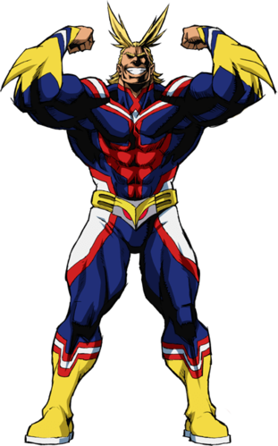
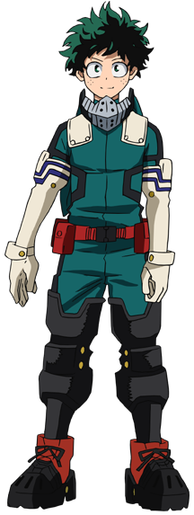
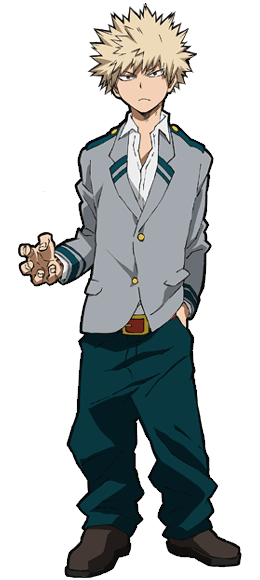
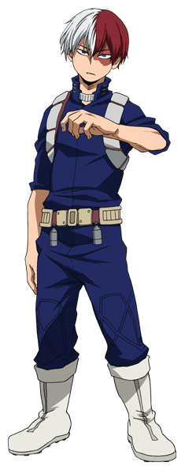
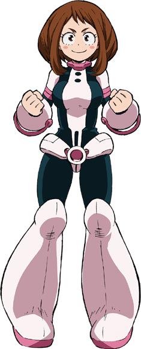

Principais personagens

Toshinori Yagi (All Might)
All Might, o 'Símbolo da Paz', foi reconhecido assim por ser o héroi mais forte de todos. Sempre exibindo seu sorriso, All Might geralmente mostra uma atitude brilhante, antipática e na qual dá a entender que pode fazer de tudo inspirando os outros desta forma. Ele tende a ser bastante amigável e simpático, devido à sua popularidade e os anos como uma grande celebridade.
Individualidade: One for All, aumenta as habilidades físicas do portador quando ativa.
Valores: Justiça e resiliência.

Izuku Midoriya
Embora tenha nascido sem individualidade, Izuku conseguiu chamar a atenção do lendário herói All Might devido ao seu heroísmo inato e sua personalidade amigável, desde então, tornou-se seu aprendiz mais próximo, bem como um aluno da Classe 1-A do Colégio U.A.. All Might passou sua Individualidade para Izuku, fazendo dele o nono portador do One For All.
Individualidade: One for All, aumenta as habilidades físicas do portador quando ativa.
Valores: Ambição, resiliência, honestidade e lealdade.
Classe: 1-A do Colégio U.A.

Katsuki Bakugo
Katsuki possui uma personalida violenta e com tendências agresivas, mesmo assim seu objetivo é se tornar o herói nº1 assim como Izuku Midoriya, embora não seja o herói ideal, por possuir uma personagens fora dos padrões de um herói, por muito é considerado um gênio já que sabe usar sua Individualidade com habilidade e inteligência, ficando sempre com notas muito boas, em seus testes.
Individualidade: Explosão, permite que o indivíduo sue nitroglicerina da palma de suas mãos, o que cria explosões.
Valores: Ambição, gânancia e orgulho.
Classe: 1-A do Colégio U.A.

Shoto Todoroki
Todoroki tem uma personalidade fria e distante, decorrente a educação áspera que recebeu. Ele é bastante imutável durante suas batalhas, podendo ficar calmo mesmo enquanto luta contra vilões. Embora seja bruto em batalha, está bem ciente da ética do heroísmo, apenas desejando subjugar seus adversários.
Individualidade: Half-Cold Half-Hot, permite que ele congele tudo com seu lado direito e queime tudo do seu lado esquerdo.
Valores: Orgulho e ambição.
Classe: 1-A do Colégio U.A.

Ochaco Uraraka
Ochaco é uma pessoa brilhante e animada que sempre tem pensamentos positivos, ainda que seja objetiva o suficiente para enxergar falhas e/ou virtudes em algo ou alguém, percebendo suas diferenças, mas respeitando eles pensando que tudo e todos se complementam.
Individualidade: Zero Gravity, permite à Ochaco remover os efeitos da gravidade de coisas sólidas ao tocá-las.
Valores: Honestidade, positividade e lealdade.
Classe: 1-A do Colégio U.A.

Tenya Iida
Tenya pode parecer severo, mas na verdade ele é uma pessoa muito direta, sincera, inteligente e nobre. Ele tende a levar tudo muito a sério, e por causa disso, ele tem o hábito de tirar conclusões precipitadas, depois falar com entusiasmo ou agir com base em tais conclusões.
Individualidade: Engine, A Individualidade de Tenya se manisfesta em forma de motores em suas panturrilhas, dando-lhe super velocidade.
Valores: Honestidade e ambição.
Classe: 1-A do Colégio U.A.
Não gosta que as coisas que não sigam um padrão.